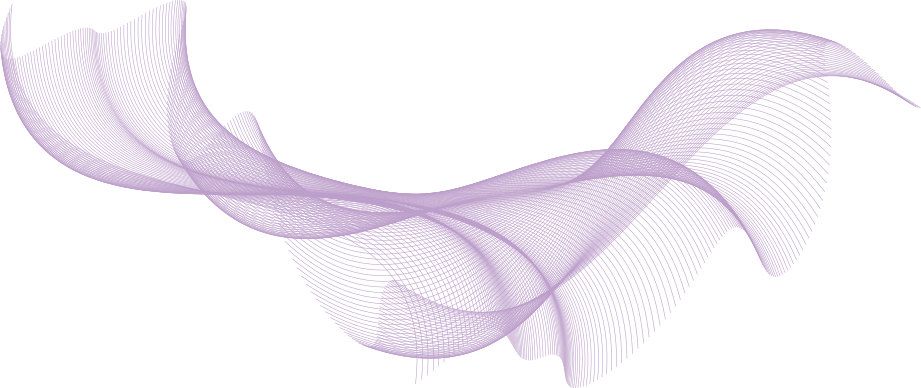
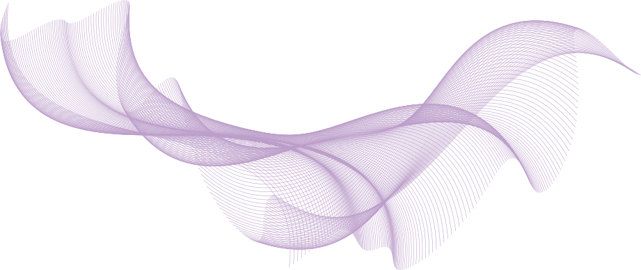
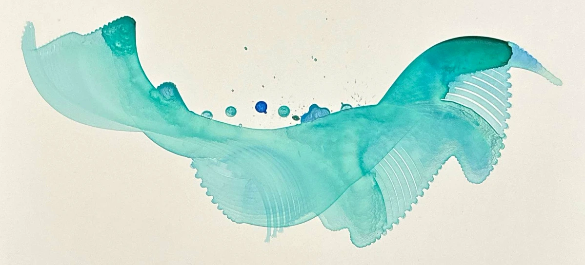
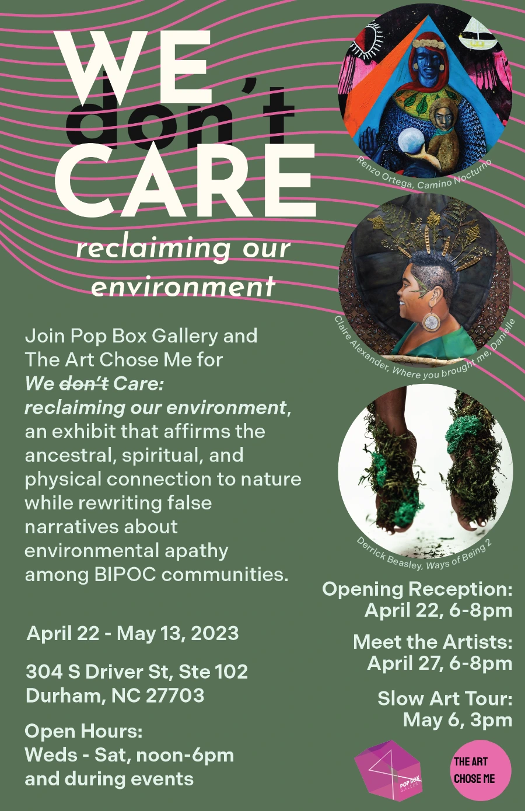
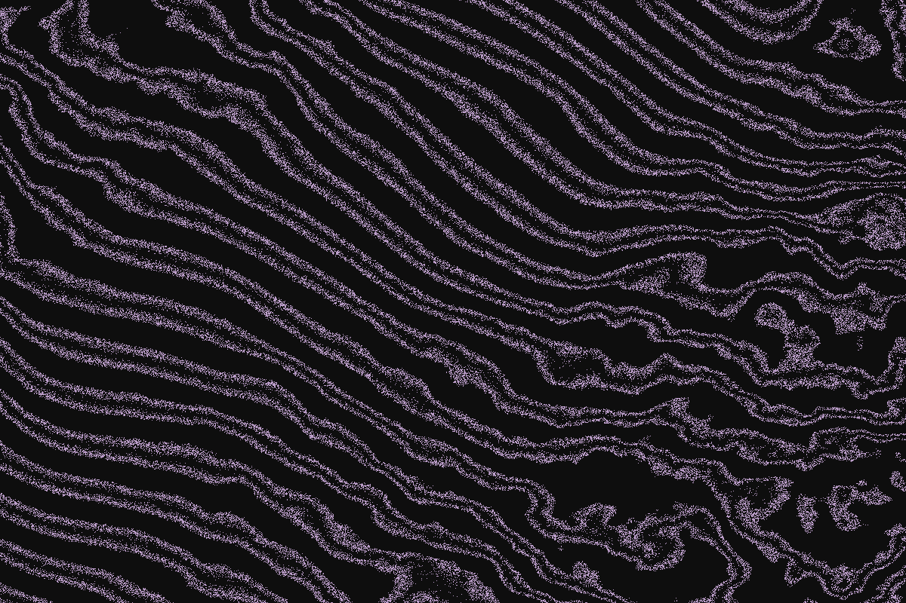
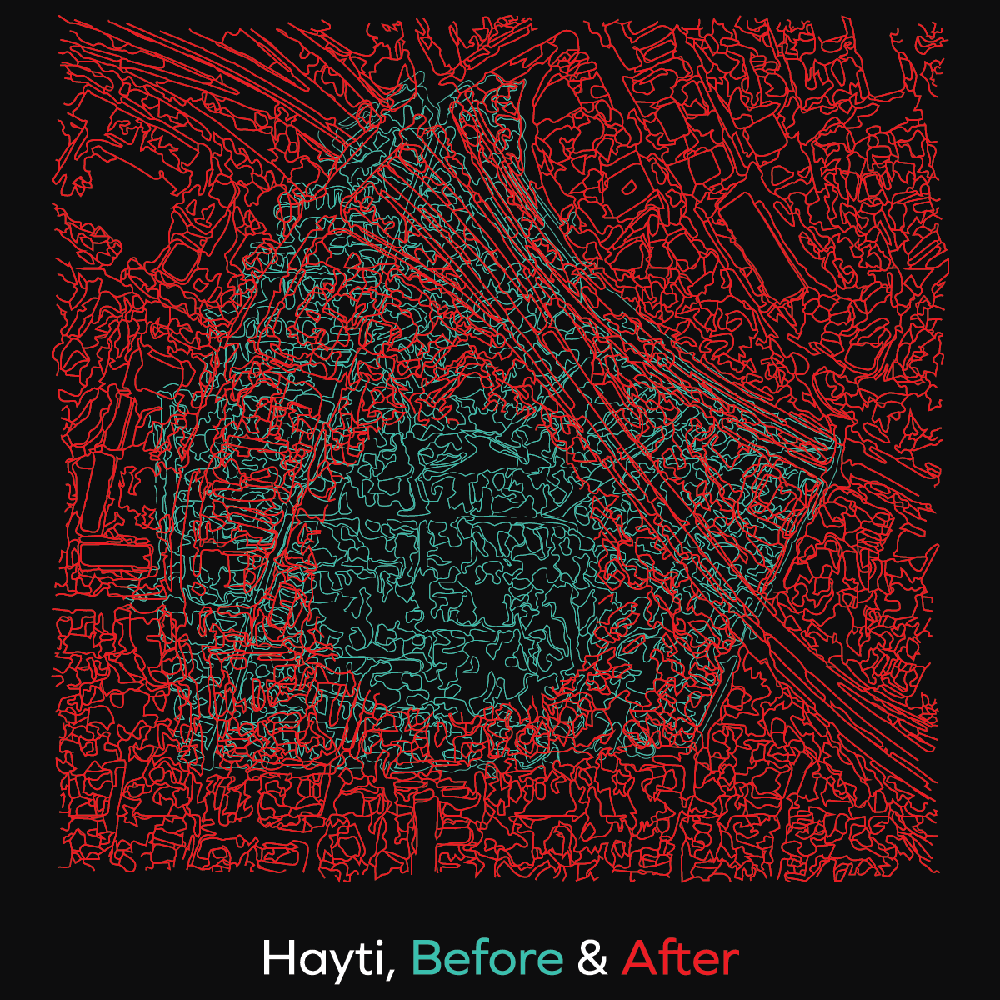
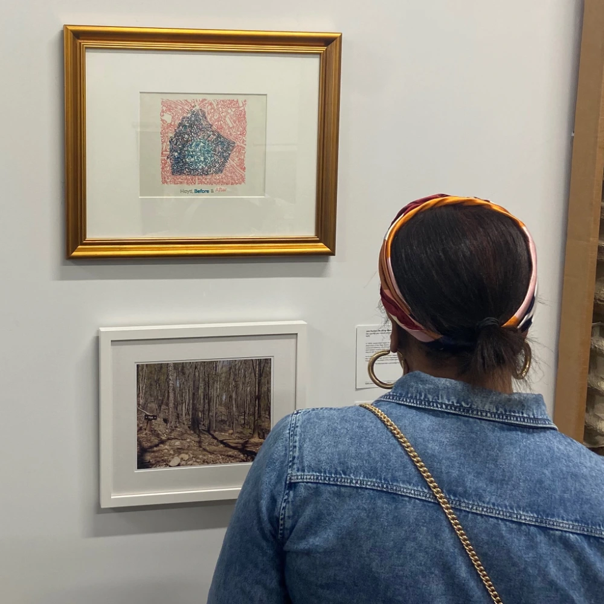
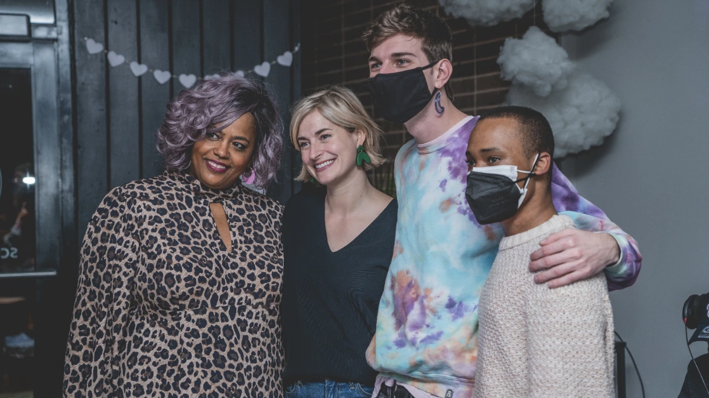

Watercolors
A combination of pen and brush work from the pen plotter.
Large Plots
These pieces were made to challenge the limitations of scale imposed by my pen plotter. By chaining together multiple pieces of paper with precise alignment, plots five or ten feet long are possible.
Organic Curves and Forms
 

These figures are created by laying out Bezier curves on a line or circle and giving them a rotation based on a Perlin noise value generated from their coordinate.
I saw an opportunity in the sweeping lines and their proximity, realizing that a brush following their path would have an easy time pushing paint around on the paper. To create this painting, drops of watercolor are placed (mostly) in the predicted path of the brush before plotting.
Flow Moons


The first algorithm I ever plotted, peering into the classic noise field through circular windows. Throughout the end of 2023 I continued to experiment with the structure and layout of the moons leading to refinement, nuance, and play.
Lightning Generator

A digital recreation of one of my favorite natural phenomena, lightning. Bolts are created through recursive subdivision, with a random chance to fork on each pass.
Things That Fly [Commission]

Created with fellow DurmPAC member Celia Ruley for Durham's Safety and Wellness Taskforce report.
The illustration, from Celia, was inspired by weightlessness and the metamorphosis of youth. I focused on the background inspired by quilting, interpreting tiles as individuals in a community.
Fibbing Lines [Commission]
At the end of September, I vended at a local art market for the first time, where I was asked if I had used the Fibonacci Series in my work before. I hadn't, so I got to work imagining how it may play out on the page. The spaces between each line grows with the series, wrapping in the horizontal dimension and dropping in the vertical.
To bring controlled chaos to the cascading lines, I gave their endpoints a slight offset provided by a two-dimensional Perlin noise field.
Ley Lines


When I think of Perlin noise, two common techniques stand out amongst the rest: flowfields and layers of wavy lines. One of my first ever generative art projects was the latter, which has today evolved into these layered ley lines.
Poisson Portraits


Another exploration of the Poisson Disc Sampling, with a twist. Where my tree rings sketch affected the sampling annulus, this sketch uses an image as a sampling density map.
Selected outputs include my brother and our family dog.
Sun Signals


Unlike my work in simulations, this p5.js sketch employs deterministic functions to set the radius of each line's start and end points.
Nerve Sampling


A p5.js sketch that generates intricate and organic tree structures by linking together Poisson Disc samples. Users can create endless unique outputs, influenced by seven adjustable parameters.
Efficiently implements this O(n) sampling alogrithm.
Make your own with this generator, with support for PNG and SVG file exports.
Juneteenth at The Hayti Heritage Center [Commission]

This is the second year that I've designed promotional materials for a youth artist exhibit featured at The Hayti Heritage Center's annual Juneteenth Celebration. This year, I had the pleasure of not only designing the promotional poster, but also being a part of the selection panel and installing the exhibit.
This poster was created almost entirely in Adobe Illustrator, making use of the Image Trace feature to adapt photography by Cornell Watson.
Bubbles

Something like a generative washing machine. This design will most likely be my last using traditional Java Processing, as the SVG runtime for p5.js has afforded me the best of both worlds when it comes to web portability and exporting for pen plotting.
Promotional Materials for Pop Box Gallery [Commission]

Graphics created in a contracted position with Pop Box Gallery over the summer of 2023, supporting their three month residency on Driver Street in the Old East Durham neighborhood.
We [Don't] Care exhibition information -> In Ecstasy, I call your name so I won't forget exhibition information ->upstART Gallery exhibition information ->Plasma Topology
A p5.js sketch that expands on previous explorations to combine 2D Perlin Noise, linear algebra, and randomness in a way that mimics flowing, fuzzy, topographic lines.
The sketch runs in realtime, with most of the computation taking place in a GLSL shader.
Hayti, Before & After
An art piece made from historical arial photography alongside modern satellite imagery. The maps were converted to vector images using Adobe Illustrator's Image Trace feature, and then carefully composited and layered by hand.
The layers were robotically plotted with my iDraw XY Pen Plotter. The use of the robot reflects the way that communities are displaced and new boundaries are drawn without direct thought or care from individuals, but as part of a larger human machine.
The piece was selected for inclusion at Pop Box Gallery's We [Don't] Care exhibition.
PROTOTYPE Launch Party
To create an immersive experience for our launch party guests that brings them into the digital realm of the zine, I designed a myriad of generative animations, which ran on three projectors to fill the space with art and light.
The animations were developed with p5.js and choreographed with the Scene Manger tool made by Marian Veteanu. You can view them at the following links:
Zine Excerpt Projection Scenes | 7 minute loopZine Title Projection Scenes | 8 minute loopZine Inspired Projection | 8 minute loopPROTOTYPE Digital Zine [Commission]

A digital zine commissioned to commemorate and immortalize Pop Box Gallery's exhibit of the same name. The zine features seven of the exhibited artists' work, biographies, and thoughts on their process. I designed the zine as a network of interactive webpages, with eleven original p5.js animations.
View PROTOTYPE ->Sawubona Digital Zine

Near and dear to my heart, Sawubona was my first large web project, as well as the first project of DurmPAC. The Collective put out an art call for BIPOC/LGBTQ youth in the triangle to feature their work in a zine. I worked closely with fellow designer Celia Donnely to create a digital edition to accompany the printed zine. Sawubona features a p5.js cover sketch and nine pieces of artwork from local youth artists.
View Sawubona ->